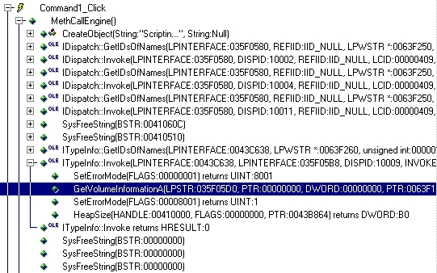

" Eternal Bliss 's Anti Crackme 4 "
| This tutorial is coming from... |
| ReFleXZ
'99 Url: Http://ReFleXZ99.cjb.net Email: ReFleXZ@fcmail.com |
| About the essay... |
|
Written
by:
ACiD BuRN Date:
2nd June 1999 Tools
required: Difficult
level: |
| Introduction... |
| Salut! Il est grand temps de se remettre au cracking! mdr! :) |
| A
propos de la protection: Serial protection .... |
| Le tutor: |
| Bon...
c'est un nouveau tutorial concernant le cracking de programmes VB!
Protections : Wow, çà a l'air difficile mais
c'est vraiment facile à cracker!!! I) Comment démarrer? Quand vous exécutez le prog avec SI chargé
ou SC, il s'arrête directement! 1- Smart check (SC) : La protection contre SC la plus courante est
la vérification de la barre de titre et de l'ID de la fenêtre 2- Soft-ice: Le programme regarde si SI est chargé
et pour supprimer ceci vous devez regarder avec SC: Pour le cracker, vous n'aurez simplement qu'à
enlever la routine qui crée le fichier .BAT et bye! 3-) the serial: Pour le cracker, utilisez SC and regardez command1_click
et choisissez l'option SHOW ALL EVENTS.  Ca semble bien!! Nous n'avons pas de calcul,
vérification ... donc pourquoi nous ne rentrions Donc, j'ai fait un keygen qui donne le n° de série de votre disque dur et ça marche! hehe !!! Désolé, il n'y a pas trop d'explications,
c'est parce que je n'ai pas beaucoup de temps à cause des Si vous avez des questions écrivez à: acid2600@hotmail.com J'espère que vous avez compris tout le
tut, et je voudrais dire que les crackme faits en VB sont vraiment Adresse du traducteur: snipernet_1@yahoo.com
ACiD BuRN [ReFleXZ'99] |
| Final Notes... |
| Greetz
To:
R!SC, ^Inferno^, AB4DS, Cyber Blade, Klefz, ,
Volatility, Torn@do, T4D, Jeff, [Virus], Jane , Appbusta , Duelist ,
tKC , BuLLeT , Lucifer48 , MiZ , DnNuke , Bjanes ... ....And All Crackers !!! .... U can Found me on IRC : At #ReFleXZ99, #Cracking4Newbies , #ECL on Efnet |
| Disclaimer... |
|
This tutorial is written for EDUCATIONAL
purposes only. ReFleXZ is not responsible for any
damage caused with this essay or any of its parts. Also, in this tutorial you'll not
find any serial numbers, so try to search |